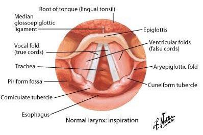
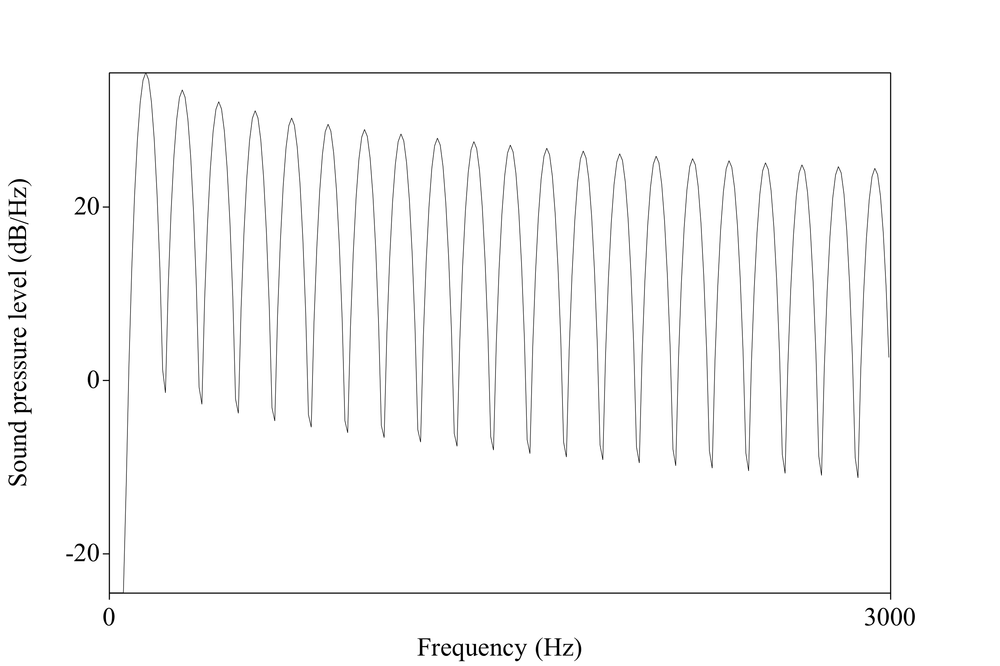
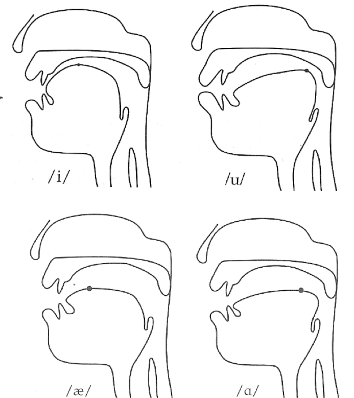
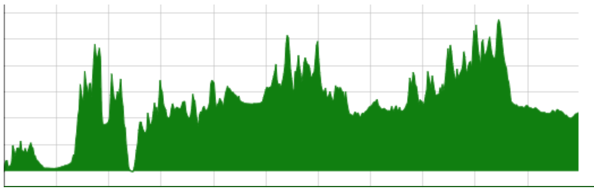
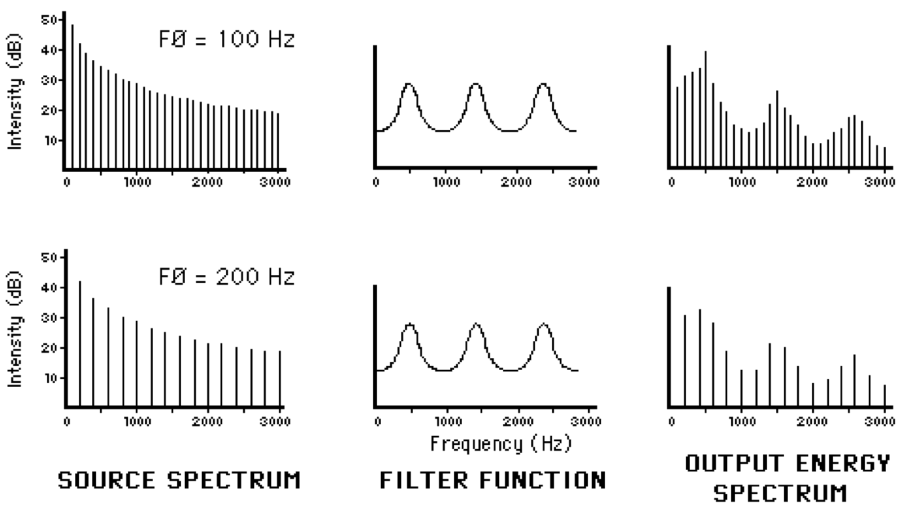

http://savethevowels.org/talks/ucsd_talk.html
(Navigate with the arrow keys or on-screen controls)
What are N-Grams?
Examples from the EnronSent Corpus
How N-Grams can form a language model
What is this model good for?
What are the strengths of N-Gram models?
What are their weaknesses?
An N-gram is a sequence of words that is N items long
1 word is a ‘unigram’, 2 is a ‘bigram’, 3 is a ‘trigram’…
We identify sequences in the text, then count their frequencies
And that’s N-Gram analysis
“How often does this sequence of words occur?”
Choose a (large) corpus of text
Tokenize the words
Count all individual words (using something like nltk)
Then all pairs of words…
Then all triplets…
All quadruplets…
… and so forth
The end result is a table of counts by N-Gram
We’ll use the EnronSent Email Corpus
~96,000 DOE-seized emails within the Enron Corporation from 2007
~14,000,000 words
This is a pretty small corpus for serious N-Gram work
#!/usr/bin/env python
import nltk
from nltk import word_tokenize
from nltk.util import ngrams
es = open('enronsent_all.txt','r')
text = es.read()
token = nltk.word_tokenize(text)
unigrams = ngrams(token,1)
bigrams = ngrams(token,2)
trigrams = ngrams(token,3)
fourgrams = ngrams(token,4)
fivegrams = ngrams(token,5)
‘The’ 560,524
‘to’ 418,221
‘Enron’ 391,190
‘Jeff’ 10,717
‘Veterinarian’ 2
‘of the’ 61935
‘need to’ 15303
‘at Enron’ 6384
‘forward to’ 4303
‘wordlessly he’ 2
‘Let me know’ 6821
‘If you have’ 5992
‘See attached file’ 2165
‘are going to’ 1529
‘Please let me know’ 5512
‘Out of the office’ 947
‘Delete all copies of’ 765
‘Houston , TX 77002’ 646
‘you are a jerk’ 35
‘If you have any questions’ 3294
‘are not the intended recipient’ 731
‘enforceable contract between Enron Corp.’ 418
‘wanted to let you know’ 390
‘The’ 560,524
‘of the’ 61,935
‘Let me know’ 6,821
‘Please let me know’ 5,512
‘If you have any questions’ 3,294
We’ll come back to this later
You counted words. Congratulations.
What does this win us?
If we know how often Word X follows Word Y (rather than Word Z)…
“What is the probability of word X following word Y?”
p(me|let) > p(flamingo|let)
We calculate log probabilities to avoid descending to zero
Probabilities are more useful than counts
Probabilities allow us to predict
Answers “Is this likely to be a grammatical sentence?”
Any natural language processing application needs a language model
We can get a surprisingly rich model from N-Gram-derived information alone
“You are” (11,294 occurrences) is more likely than “You is” (286 occurrences)
“Would have” (2362) is more likely than “Would of” (17)
“Might be able to” (240) is more common than “might could” (4)
“Two agreements” (35) is more likely than “Two agreement” (2)
“Throw in” (35) and “Throw out” (33) are much more common than ‘Throw’ + other prepositions
n-grams provide a very simple language model from which we can do inference
Probabilities of language are based in part on our interaction with the world
People at Enron ‘go to the’ bathroom (17), Governor (7), Caymans (6), assembly (6), and senate (5)
People at Enron enjoy good food (18), Mexican Food (17), Fast Food (13), Local Food (4), and Chinese Food (2)
Power comes from California (9), Generators (6), EPMI (3), and Canada (2)
Probable groupings tell us something about how this world works
Provide some grammatical information
Provide some real-world information
They can solve real world problems
Predictive typing
Speech recognition
“I took a walk for exercise”
“I need a wok for stir fry”
Typo detection
“I made a bog mistake”
“She got lost in a peat big”
Sentiment analysis
“How often is word X used to describe black athletes vs. white athletes?”
“Is Unigram frequency of these words predicted by subject race?”
“What about racially loaded bigrams?”
Words like “Aggressive”, “Angry”, “Unstoppable” and “Ferocious” are preferentially applied to black athletes
Work is ongoing
Easy to understand and implement conceptually
Syntax and semantics don’t need to be understood
You don’t need to annotate a corpus or build ontologies
As long as you can tokenize the words, you can do an N-Gram analysis
Makes it possible for datasets where other NLP tools might not work
A basic language model comes for free
It works the same on 1000 words or 100,000,000 words
Modest computing requirements
More data means a better model
You see more uses of more N-Grams
Your ability to look at higher Ns is limited by your dataset
Probabilities become more defined
… and we have a LOT of data
“The tall giraffe ate.” and “The giraffe that ate was tall.”
“The angry young athlete” and “The angry old athlete”
Windowed association models and Latent Semantic Analysis are better at finding co-occurrence
Models are only good at estimating items they’ve seen previously
“Her Onco-Endocrinologist resected Leticia’s carcinoma”
“Bacon flamingo throughput demyelination ngarwhagl”
This is is why smoothing is crucial
Assigning very low probabilities to unattested combinations
… and why more data means better N-Grams
Syntax, Coreference, and Part of Speech tagging provide important information
“You are” is more likely than “You is” (286 occurrences)
“I bought an awful Toyota.” vs. “I bought a Toyota. It’s awful.”
“Time flies like an arrow, fruit flies like a banana”
There’s more to language than juxtaposition
They’re missing crucial information about linguistic structure
They handle uncommon and unattested forms poorly
They only work with strict juxtaposition
They’re simple
They have minimal requirements for the data
They provide rich information when used intelligently
And they scale beautifully with the sorts of huge datasets available today


Important for understanding speech production and perception
Key to being able to discuss vowel formants
Useful for understanding many elements of acoustics
How are we going to visualize sound today?
What are vowel formants? (Practically)
The Source-Filter Model of Speech Production
Vowel formants and resonance
Source-Filter Independence


We measure them for vowel production
We talk about them in vowel perception
They’re useful cues for consonants
They’re one of the first things people gravitate to in spectrograms


‘Source’ and ‘Filter’



Filters that ugly signal by changing the position of articulators
What do I mean by filter?

Some wavelengths ‘fit’ well within a cavity of a given size or shape
Sound at those wavelengths will grow stronger because they ‘resonate’
Sound at other wavelengths will grow quieter and are ‘damped’
Some frequencies are made stronger
Some are made weaker
Some are unaffected
… and this is how vowels work
Changing the position of the articulators affects the size and shape of the cavity
Changing the position of articulators in your vocal tract affects resonances
(The source signal)



The larynx produces a signal with lots of harmonics
The rest of the vocal tract filters it into something we recognize as “speech”
Vowel perception is formant based
Formants give us information about what the tongue is doing even when no closures are being made
Formants tell me what your tongue is doing in the mouth!
Studying vowel quality is usually done using formants
Formants tell me what your tongue is doing in the mouth
“The vocal folds produce harmonics”
“Resonance changes harmonics, does it create separate formants?”
“Where can I see the formants in a spectral slice?”



Where harmonics of the source are amplified, rather than damped
This indicates certain positions for the tongue in the mouth
One final, crucial point…



The vocal folds provide a source signal for speech
The rest of the vocal tract filters that source into identifiable sounds
We call those ranges of harmonics that resonate with a certain articulation “Formants”
These resonances tell us how the vocal tract is being shaped at that moment
Formants are crucial for percieving (and measuring) vowels
The Source and the Filter are independent
… And vowel acoustics are really, really cool!
http://savethevowels.org/talks/ucsd_talk.html